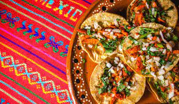
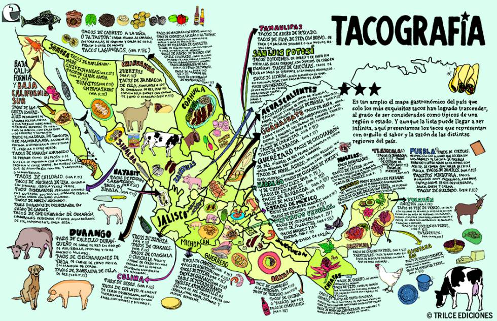

En realidad no se puede determinar con exactitud en qué fecha éste fue inventado pero se cree que el plato tiene su origen en el México prehispánico. Una de las teorías es que este existió debido a que los hombres trabajaban todo el día en el campo, así que las mujeres inventaron este alimento ya que era fácil de transportar y de consumir. Una teoría sobre el posible origen de la palabra taco es el término ‘tlahco’ del idioma náhuatl, que significa ‘mitad’ o ‘en el medio’, en el sentido que el alimento se coloca en el medio de la tortilla de maíz. La palabra en náhuatl para referirse a la tortilla de maíz (invento indígena precolombino) es ‘tlaxcalli’.
 